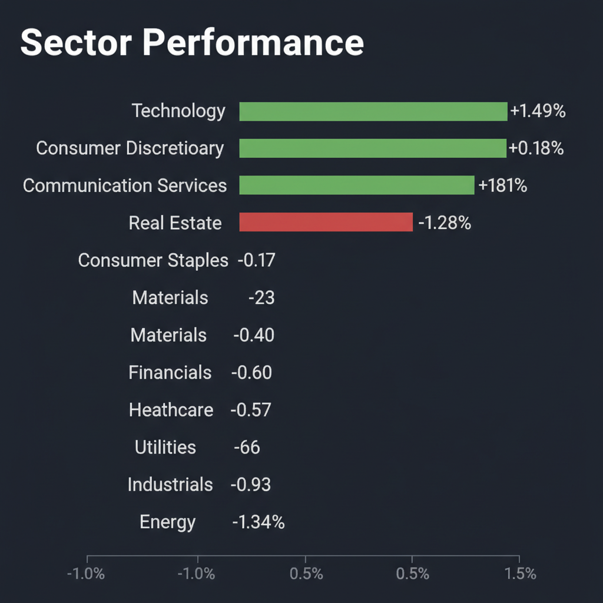
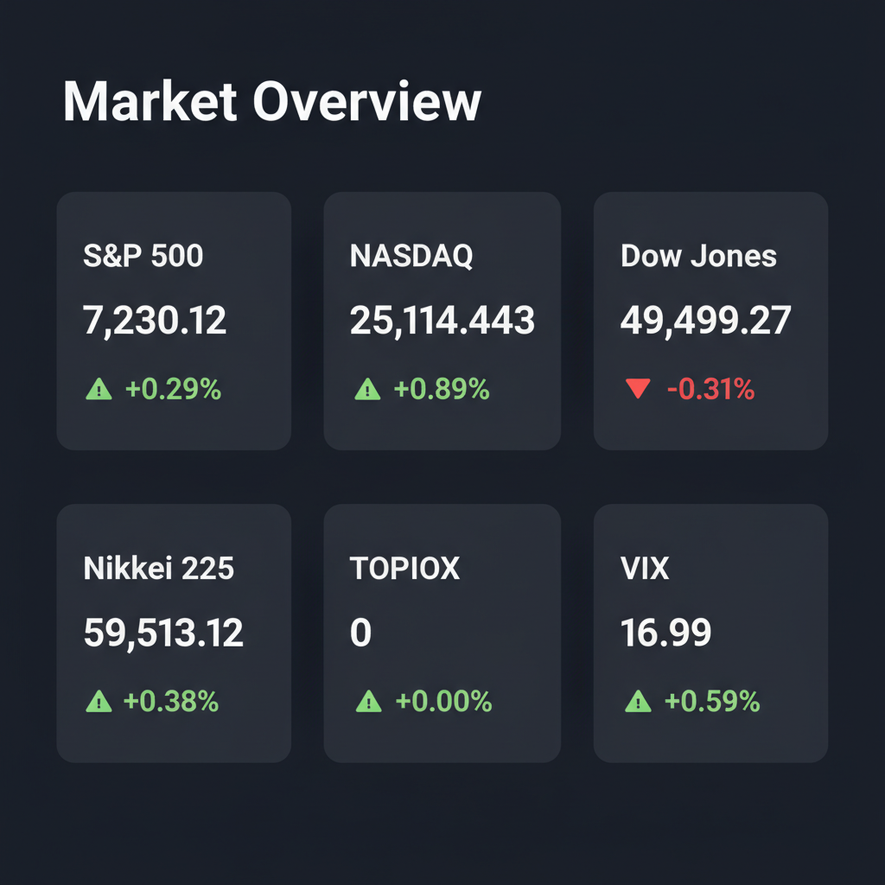

Daily Investment Report - 2026-05-03
Generated: 2026/5/3 7:21:23


投資チームミーティングでの各エージェントの分析を統合した、本日の投資家向け最終レポートをお届けします。
1. エグゼクティブサマリー
- 現在の市場はAI・テクノロジー主導で株価が上昇する一方、実体経済では銀行の融資厳格化（信用収縮）が進行する「K字型のデカップリング相場」となっています。
- 中東の地政学リスクや為替介入警戒など不確実性が高まる中、極端にバリュエーションが過熱した大型ハイテク株への集中投資は極めて危険な水域に達しています。
- 投資家は直ちにキャッシュ比率を引き上げて下落リスクに備えつつ、強固な財務基盤と防衛的なキャッシュフローを持つ「中小型のニッチトップ・ディフェンシブ銘柄」へ資金をローテーションすべきです。
2. 注目銘柄リスト
強気（買い推奨）
- 湖北工業（東証: 6524） [時価総額目安: 約500億円]: 海底ケーブル用光部品で世界トップクラスのシェアを誇る隠れたAIインフラ関連株です。圧倒的な高収益（営業利益率20%超）と無借金経営でありながら割安圏に放置されており、テクニカルな底値圏での出来高増加を確認した上でのエントリーを推奨します。
- The Pennant Group, Inc.（NASDAQ: PNTG） [時価総額目安: 約10億ドル]: 在宅医療・シニアリビングを展開するヘルスケア企業です。テナントが修繕費等を負担する「トリプルネットリース」での施設買収を進めており、インフレや信用収縮の逆風下でも安定したフリーキャッシュフローを創出する強力な防衛銘柄となります。
中立（様子見）
- Exodus Movement, Inc.（NYSE American: EXOD） [時価総額目安: 小型]: 自己保管型暗号資産プラットフォームを展開し、M&Aによる巧みな資本配分で次世代金融インフラの覇権を狙っています。ただし、業績が暗号資産市況のボラティリティに強く依存するため、ブレイクアウトのチャートシグナルが出るまではポジションを抑えて監視に留めてください。
- ソシオネクスト（東証: 6526） [時価総額目安: 中大型]: 日本の半導体・AIテーマを牽引する銘柄ですが、市場の期待値が過熱気味です。金利高止まり局面でのマルチプル低下リスクがあるため、RSIの過熱感が冷める押し目を待つべきです。
弱気（警戒）
- スピリット航空（NYSE: SAVE） [時価総額目安: 超小型]: 極度の財務難により、一夜にして事業停止（シャットダウン）に陥るリスクが報じられています。テクニカルな自律反発を狙うのは「落ちてくるナイフを掴む」行為であり、完全なポートフォリオからの除外を推奨します。
- サンリオ（東証: 8136） [時価総額目安: 中大型]: 役員の不祥事疑惑により決算発表が延期されました。財務諸表の信頼性が毀損されバリュエーション評価が不可能な状態であり、深刻なガバナンスリスクによる急落（ギャップダウン）に警戒が必要です。
3. セクター推奨ランキング
マクロ経済の信用収縮やインフレに強く、長期リース契約などに基づく定常的なキャッシュフローがポートフォリオの強力な防壁となります。
AI需要の急加速に伴い、光ファイバー網やデータセンターなど「物理的なインフラ」への巨額投資サイクルが起きており、景気動向に左右されにくい構造的な成長が見込めます。
日銀の追加利上げタイミングが意識される中、利ざや改善の恩恵を直接受けるため、為替の円高リスクに対するヘッジとしても機能します。
イランの和平提案などにより地政学プレミアムが剥落しつつあり、グローバルな景気減速による原油需要の減退リスクに直面しています。
銀行の融資基準厳格化により借り換えコストが急増し、財務基盤の弱い限界企業の倒産リスクが最も高まっている危険なセクターです。
4. 今週の注目イベント
- 米国 4月分 雇用統計の発表: FRBの金融政策の方向性、および高金利が実体経済（労働市場）に与えている影響を確認する最重要指標です。
- 米国 4月分 消費者物価指数（CPI）の発表: インフレの高止まりリスクと、年内の利下げシナリオの実現可能性を占う試金石となります。
- 日銀・金融政策決定会合（4月分）に関する議論の精査: 中東情勢や急激な円安を踏まえた、日銀の「次の利上げタイミング」を探る重要な手がかりとなります。
5. リスク要因
- 信用収縮（クレジットクランチ）の連鎖: 銀行の融資基準の厳格化が個人消費や住宅市場を冷やし込み、過剰債務企業の連鎖的な資金ショートを引き起こすリスク。
- AI・ハイテク株のフラッシュ・クラッシュ: 少数の大型テック株に資金が極端に集中しており、マクロショックが生じた際にアルゴリズム取引によるパニック売りが発生するリスク。
- 中東情勢の突発的な悪化: 現在市場は和平を織り込んでいますが、トランプ前大統領の強硬姿勢などによりホルムズ海峡が封鎖され、原油急騰とスタグフレーションを招くテールリスク。
- 日本株のはしご外しと為替介入: 「日経平均6万円」の楽観論が広がる中、政府・日銀の為替介入やサプライズ利上げが引き金となり、海外資金が急激に流出するリスク。
6. アクションアイテム
- キャッシュ比率の引き上げ: 現在のポジションサイズを縮小し、現金比率を通常の1.5倍〜2倍に引き上げて、今後のボラティリティ拡大に備えてください。
- 大型ハイテク株の利益確定: 過熱感のあるAI関連・大型テック株は部分的に利益を確定し、集中リスクを低減させてください。
- ディフェンシブ・中小型株への資金移動: 確保した資金の一部を、PNTGや湖北工業のような、強固な財務基盤とインフレ耐性を持つ中小型株へローテーションしてください。
- 脆弱な銘柄の即時損切り: スピリット航空など、財務リスクやガバナンス懸念（サンリオ等）を抱える銘柄は、テクニカルな反発を待たずに直ちに全株売却してください。
- テールリスクヘッジの構築: VIXのコールオプションや主要指数のプットオプションを少額購入し、相場急落時の保険（ヘッジ）をかけてください。
- ストップロスの厳格化: 新規エントリーおよび既存ポジションに対して、サポートラインから2〜3%下、または買値から5〜8%下の位置に機械的なロスカット水準を設定してください。